Front-End
Dev Front-End em evolução, que constrói experiências digitais criativas e funcionais para todos os dispositivos.
Dev Front-End em evolução, que constrói experiências digitais criativas e funcionais para todos os dispositivos.
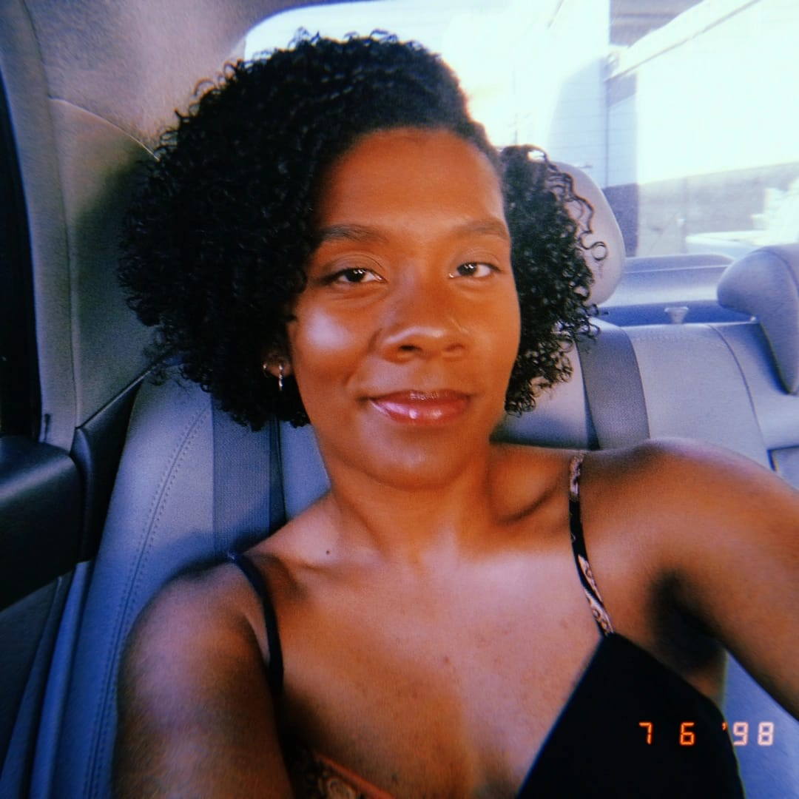
Atualmente em fase de conclusão do Ensino Médio Técnico em Informática no Instituto Federal Baiano – Campus Guanambi (instituição onde ingresso desde setembro de 2023), busco constantemente consolidar minha base acadêmica e expandir minhas competências profissionais. Desenvolvi uma sólida aptidão para a comunicação e linguagens, o que se reflete na produção de redações corporativas, estruturação de documentos técnicos sob as normas ABNT e na condução de apresentações orais com clareza e desenvoltura. No âmbito tecnológico, despertei grande interesse pelo segmento de Front-End, área na qual idealizei e apresentei projetos acadêmicos com excelente recepção e rigor técnico. Embora esteja em um momento de exploração de carreira e definição de metas futuras na Tecnologia da Informação, identifico um potencial promissor para investir nas áreas de Desenvolvimento Web e Mobile. Paralelamente à trajetória técnica, atuo como violinista, integrando a música como uma vertente essencial de minha formação cultural, disciplina e dedicação pessoal.
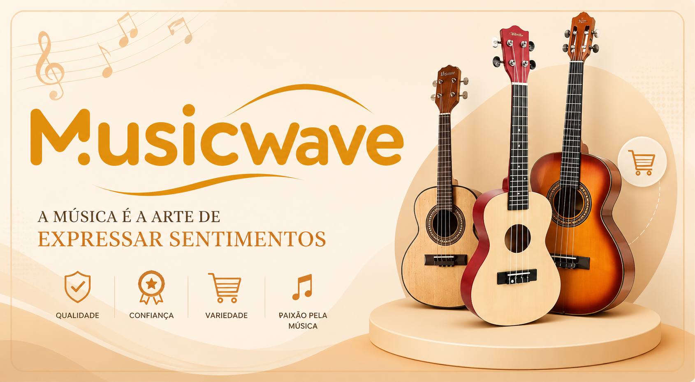
MusicWave é um e-commerce de instrumentos musicais de corda, que inclui um afinador para os instrumentos em catálogo. Confira os mais variados instrumentos, desde violinos, violas, violoncelos, contrabaixos, até acessórios como arcos e estojos. O afinador integrado permite que os músicos mantenham seus instrumentos sempre afinados, garantindo a melhor performance musical. Explore nossa loja e encontre o instrumento perfeito para você!
Ver no GitHub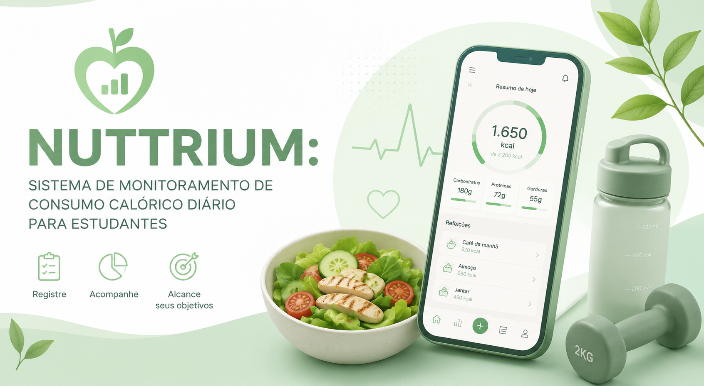
O Nuttraea é um sistema web desenvolvido para auxiliar estudantes no monitoramento do consumo calórico diário e na construção de hábitos alimentares mais conscientes. A plataforma permite registrar refeições, acompanhar nutrientes, definir metas personalizadas e visualizar a evolução alimentar, unindo tecnologia, saúde e educação em uma experiência simples e acessível.
Ver web Ver no GitHub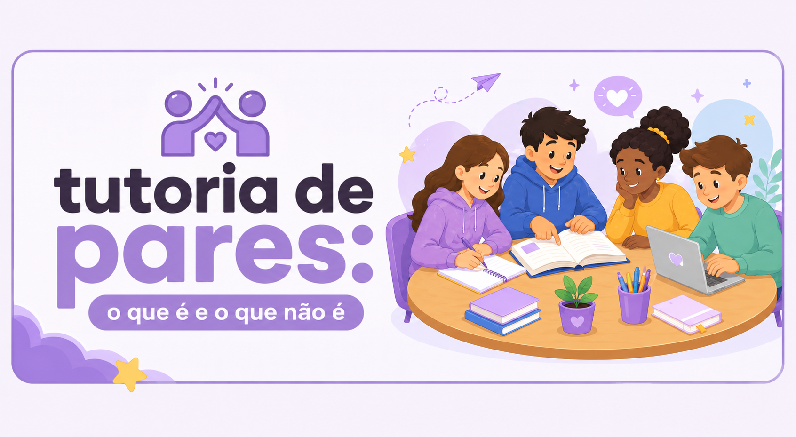
Desenvolvido na disciplina Projeto Integrador II, este portal tem como objetivo tornar o aprendizado sobre Tutoria de Pares mais acessível, dinâmico e descomplicado. Através de conteúdos interativos, buscamos apresentar a importância dessa estratégia pedagógica, esclarecendo conceitos e incentivando práticas de aprendizagem colaborativa.
Ver web Ver no GitHub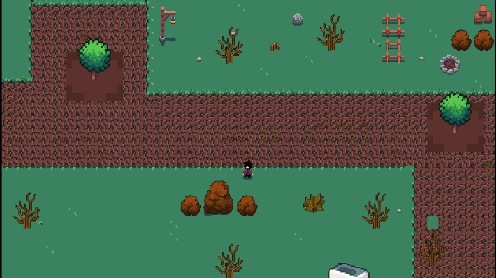
Jogo educativo interativo criado no contexto da disciplina Projeto Integrador I para ensinar conceitos de educação ambiental e consumo consciente. Os jogadores exploram diferentes cenários — como recolhimento de lixos, apagamrnto de incêncidios e redução de resíduos — completando missões e mini-desafios que demonstram o impacto das escolhas diárias. O jogo inclui feedback imediato, dicas práticas para mudança de hábitos e níveis progressivos que aumentam a complexidade, ideal para uso em sala de aula e atividades pedagógicas com alunos do ensino fundamental e médio.
Disponível em breve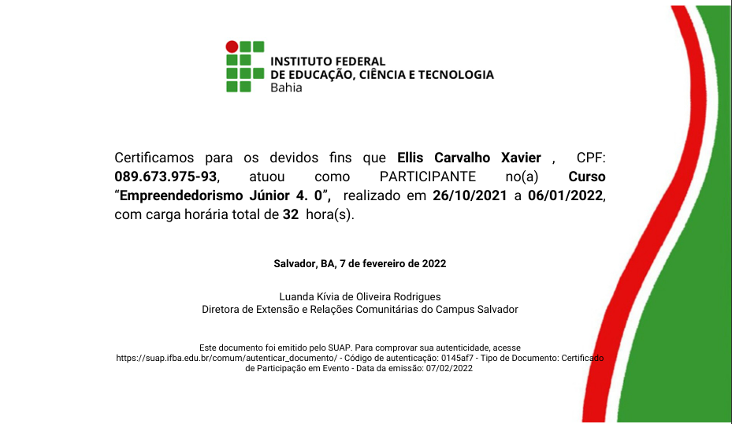
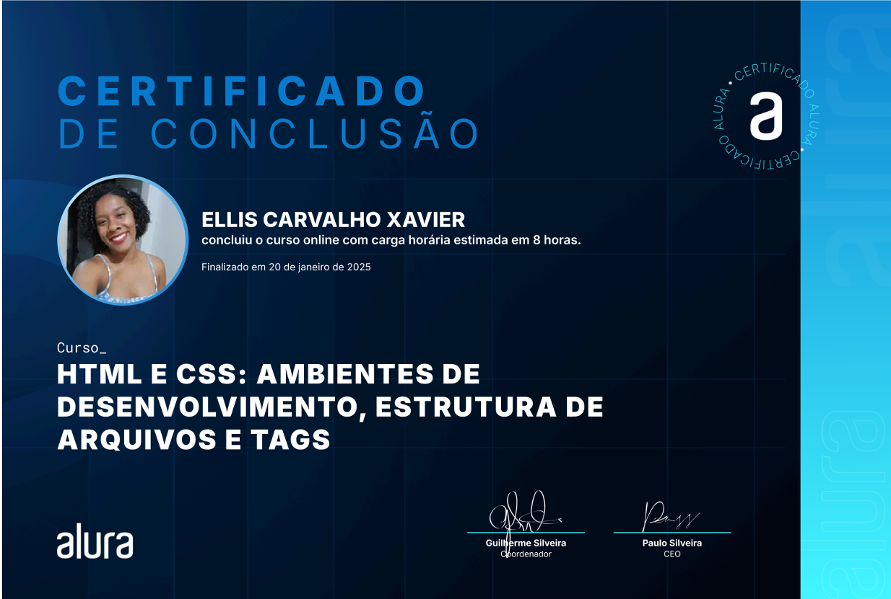
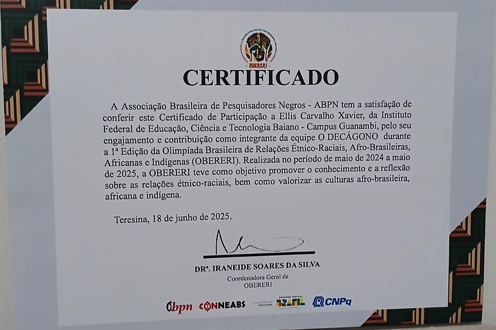
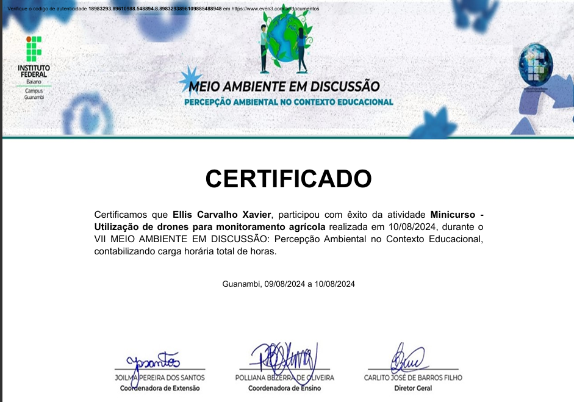
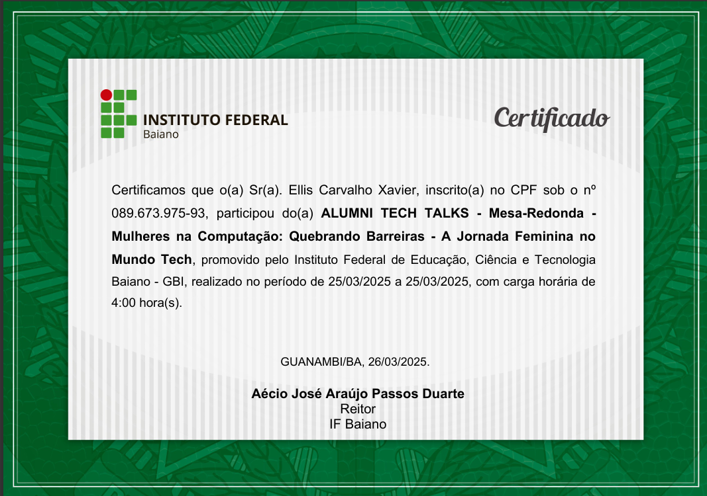
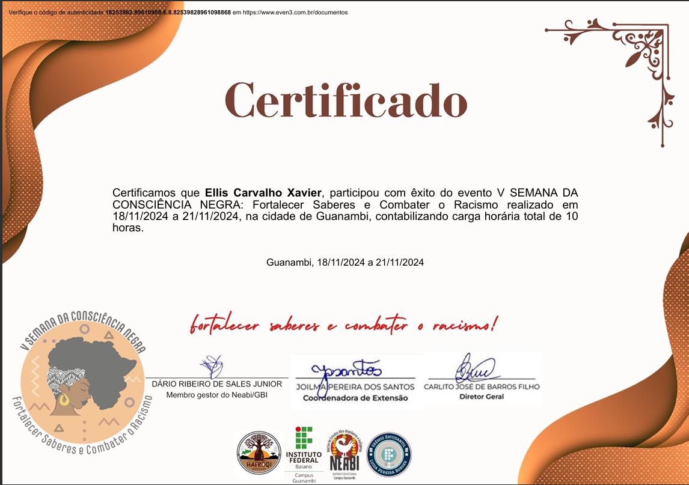
.webp)
Conecte-se comigo pelas redes sociais: